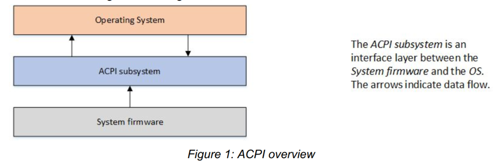
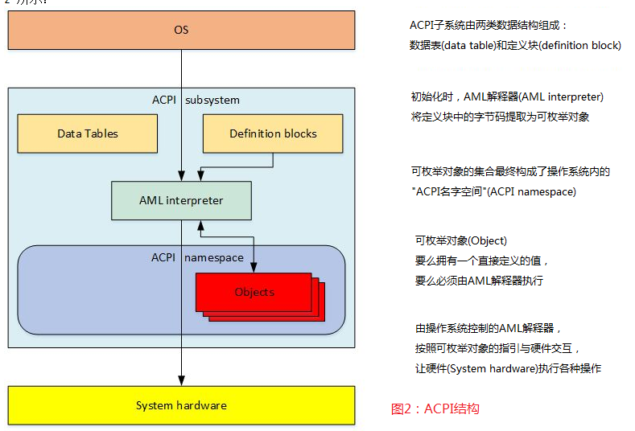
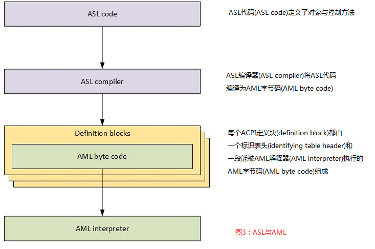
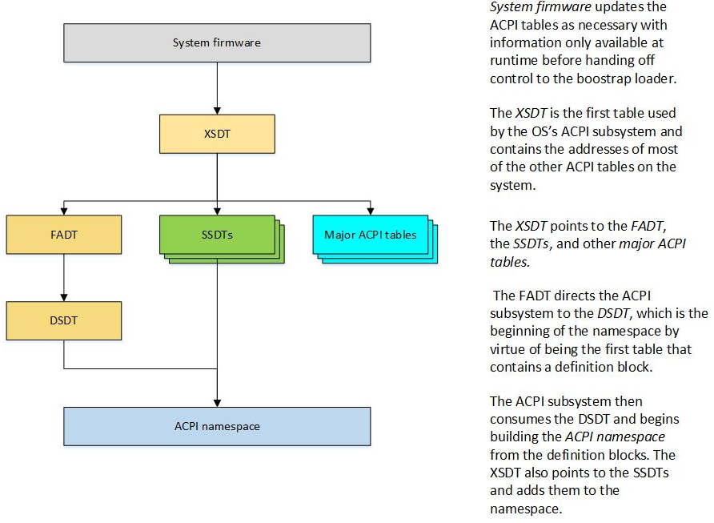
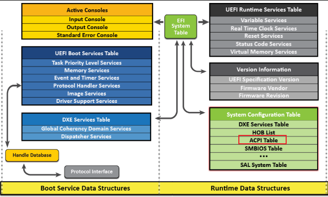
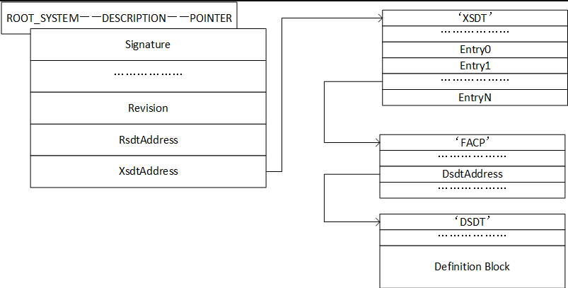
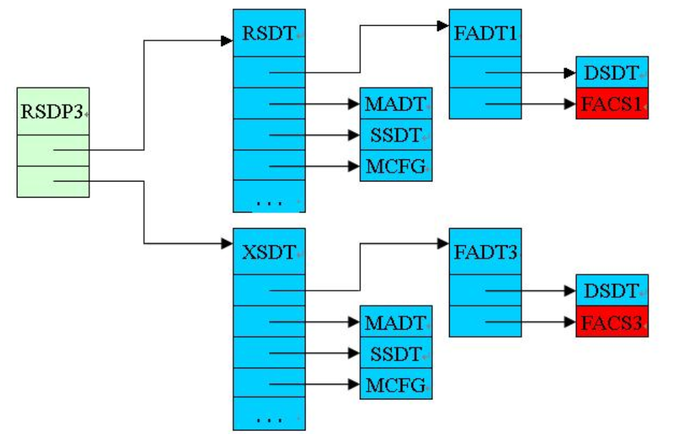
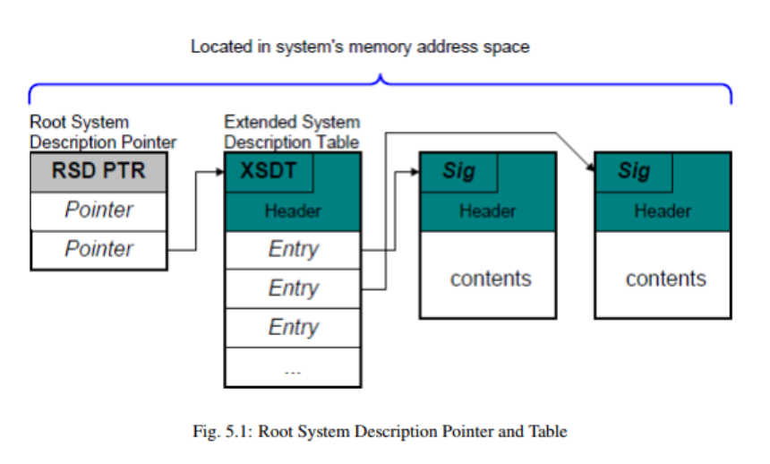
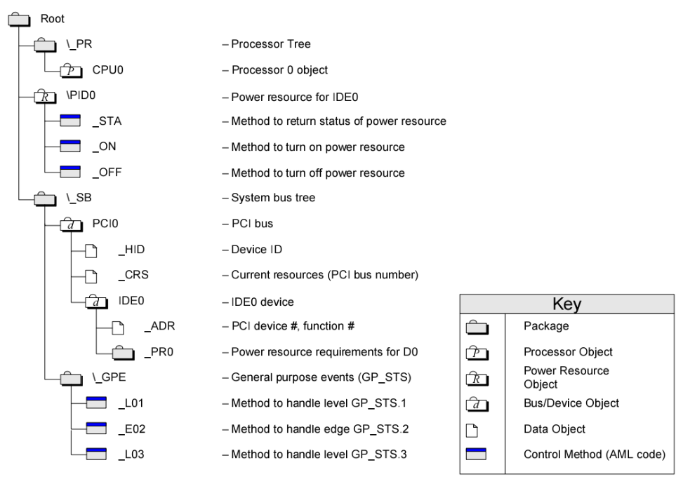
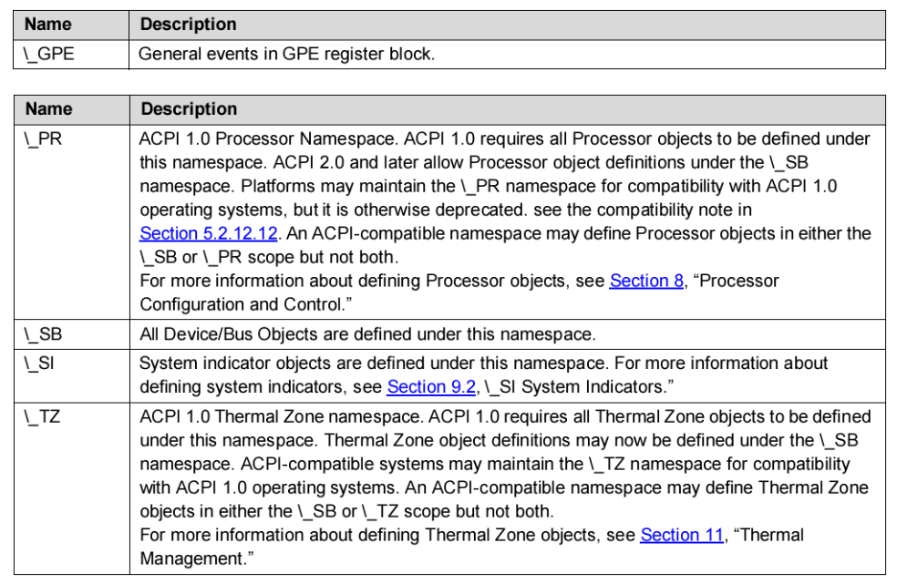

ACPI Introduction and Overview
[toc]
History of ACPI
ACPI是在1990年代中期通过英特尔、微软、东芝、惠普、Phoenix 之间的合作开发的。在ACPI出现之前，操作系统主要使用BIOS(基本输入输出系统)接口进行电源管理以及设备的发现和配置。这种电源管理方法利用操作系统调用系统BIOS的能力来进行电源管理。BIOS还用于发现系统设备并基于探测输入/输出(I/O)尝试将正确的驱动程序匹配到正确的设备(即插即用，plug and play)来加载驱动程序。设备的位置也可以在BIOS中硬编码，因为平台本身是不可枚举的。
这些解决方案在三个关键方面存在问题。首先，操作系统应用程序的行为可能会受到BIOS配置的电源管理设置的负面影响，导致系统在演示期间或其他不方便的时间进入睡眠状态。其次，电源管理接口在每个系统上都是专有的，这要求开发人员学习如何为每个单独的系统配置电源管理。最后，各种设备的默认设置也可能相互冲突，导致设备崩溃、行为不正常或无法发现。
开发ACPI就是为了解决这些问题和其他问题。
What is ACPI?
ACPI首先可以理解为一种独立于体系结构的电源管理和配置框架，它在主机操作系统内表现为一个子系统。该框架建立了一个硬件寄存器集来定义电源状态(睡眠、休眠、唤醒等)，硬件寄存器集可以容纳对专用硬件和通用硬件的操作。
标准ACPI框架和硬件寄存器集的主要目的是启用电源管理和系统配置，而无需直接从操作系统本地调用固件。ACPI作为系统固件(BIOS)和操作系统之间的接口层，具有一定的限制和规则。如"图1"所示：

从根本上说，ACPI定义了两种在系统固件和操作系统之间共享的数据结构：数据表(data table)和定义块(definition block)。这些数据结构是固件和操作系统之间的主要通信机制，数据表存储原始数据并由设备驱动程序使用，定义块由解释器可执行的字节码组成。如"图2"所示：

此定义块字节码是从 ASL(ACPI Source Language) 代码编译而来的。ASL是用于定义ACPI对象和编写控制方法的语言。ASL编译器将ASL翻译成 AML(ACPI机器语言) 字节码。AML是 ACPI AML 解释器处理的语言，如"图3"所示：

AML解释器执行字节码并评估定义块中的对象，以允许字节码执行循环结构、条件评估、访问定义的地址空间以及执行应用程序所需的其他操作。AML解释器对定义的地址空间具有读/写访问权限，包括系统内存、I/O、PCI配置等。它通过定义称为"对象"的入口点来访问这些地址空间。对象要么有一个直接定义的值，要么能够由AML解释器执行。
这个可枚举对象的集合是一个称为"ACPI命名空间"的操作系统结构。命名空间是系统上ACPI设备的分层表示。系统总线是这些ACPI设备的枚举根。在其他总线上可枚举的设备(如PCI或USB设备)通常不会在命名空间中枚举。相反，它们自己的总线会枚举设备并加载驱动程序。但是，所有可枚举的总线都有一种编码技术，允许ACPI对设备的总线特定地址进行编码，以便可以在ACPI中找到它们，即使ACPI通常并不加载这些设备的驱动程序。
通常，具有 _HID 对象(硬件识别对象)的设备会被枚举并由ACPI加载其驱动程序。具有 _ADR 对象(物理地址对象)的设备通常不会被ACPI枚举，并且通常不会被ACPI加载其驱动程序。_ADR 设备通常可以在不涉及ACPI的情况下执行所有必要的功能，但是在设备驱动程序无法执行功能的情况下，或者如果驱动程序需要与系统固件通信，ACPI可以评估对象以执行所需的功能。
例如，PCI不支持本机热插拔。但是，PCI可以使用ACPI来评估对象并定义允许ACPI填充在PCI上执行热插拔所需功能的方法。
ACPI也是一个运行时模型，它处理系统运行期间发生的ACPI中断事件。ACPI继续根据需要评估对象以处理这些事件。这种基于中断的运行时模型在下面的运行时模型部分有更详细的讨论。
ACPI initialization
了解ACPI如何工作的最好方法是按时间顺序来了解。在用户启动系统的那一刻，系统固件完成其设置、初始化和自检。如"图4"所示:

然后，系统固件使用固件初始化期间获得的信息，根据需要使用各种平台配置和电源接口数据更新ACPI表，然后再将控制权传递给引导加载程序。扩展根系统描述表(XSDT)是ACPI子系统使用的第一个表，包含系统上大多数其他ACPI表的地址。XSDT指向固定的ACPI描述表(FADT)以及操作系统在初始化期间处理的其他主要表。操作系统初始化后，FADT将ACPI子系统引导到差异化系统描述表(DSDT)，这是命名空间的开始，因为它是第一个包含定义块的表。
ACPI子系统然后处理DSDT并开始从ACPI定义块构建命名空间。XSDT还指向辅助系统描述表(SSDT)并将它们添加到命名空间。ACPI数据表提供有关系统硬件的操作系统原始数据。
操作系统从ACPI表构建命名空间后，它开始遍历命名空间并为它在命名空间中遇到的所有 _HID 设备加载设备驱动程序。

ACPI 在EDK2中存储的位置
system table -> system configuration table -> ACPI table
system table 会作为启动参数传递给OS，这样OS就知道了系统信息。
而ACPI table 是作为system configuration table的一个entry，entry的结构包括一个GUID和一个指针，如下所示：
///
/// Contains a set of GUID/pointer pairs comprised of the ConfigurationTable field in the
/// EFI System Table.
///
typedef struct {
///
/// The 128-bit GUID value that uniquely identifies the system configuration table.
///
EFI_GUID VendorGuid;
///
/// A pointer to the table associated with VendorGuid.
///
VOID *VendorTable;
} EFI_CONFIGURATION_TABLE;
ACPI 使用的GUID定义在 MdePkg\Include\Guid\Acpi.h
#define ACPI_TABLE_GUID \
{ \
0xeb9d2d30, 0x2d88, 0x11d3, {0x9a, 0x16, 0x0, 0x90, 0x27, 0x3f, 0xc1, 0x4d } \
}
#define EFI_ACPI_TABLE_GUID \
{ \
0x8868e871, 0xe4f1, 0x11d3, {0xbc, 0x22, 0x0, 0x80, 0xc7, 0x3c, 0x88, 0x81 } \
}
#define ACPI_10_TABLE_GUID ACPI_TABLE_GUID
//
// ACPI 2.0 or newer tables should use EFI_ACPI_TABLE_GUID.
//
#define EFI_ACPI_20_TABLE_GUID EFI_ACPI_TABLE_GUID
extern EFI_GUID gEfiAcpiTableGuid;
extern EFI_GUID gEfiAcpi10TableGuid;
extern EFI_GUID gEfiAcpi20TableGuid;
ACPI table 结构
包括1.0和2.0 版本。



在ACPI table entry 中，存的就是RSDP的指针。RSDP 中又存储了多个指针，其中一个指针，指向XSDT。
RSDT与XSDT区别
指针大小：
- RSDT使用32位指针，因此只能指向4GB地址空间内的ACPI表。
- XSDT使用64位指针，能够支持更大的地址空间，适用于64位系统。
兼容性：
- RSDT在ACPI 1.0版引入，主要用于32位系统。
- XSDT在ACPI 2.0版引入，主要用于64位系统，但仍然需要向下兼容32位系统。
表结构：
- RSDT的指针列表由32位地址指针组成。
- XSDT的指针列表由64位地址指针组成。
Linux Kernel 如何查找ACPI
和创建过程类似，找系统表，找配置表，找ACPI 表。
实际ACPI table
我的笔记本上的ACPI table，在XSDT下，共挂了36个entry。其中RSDP，XSDT，FADT（Fixed ACPI Description Table），DSDT（Differentiated System Description Table），FACS（Firmware ACPI Control Structure）是必须存在的，其他可选。
Signature "XSDT"
Length 0x00000144 (324)
Revision 0x01 (1)
Checksum 0x34 (52)
OEM ID "LENOVO"
OEM Table ID "CB-01 "
OEM Revision 0x00000001 (1)
Creator ID " "
Creator Revision 0x01000013 (16777235)
Entry0 0x0000000044BC3000 (FACP)
Entry1 0x0000000044B2E000 (UEFI)
Entry2 0x0000000044BF3000 (SSDT)
Entry3 0x0000000044BF2000 (SSDT)
Entry4 0x0000000044BEC000 (SSDT)
Entry5 0x0000000044BE8000 (SSDT)
Entry6 0x0000000044BE4000 (SSDT)
Entry7 0x0000000044BD6000 (SSDT)
Entry8 0x0000000044BD5000 (SSDT)
Entry9 0x0000000044BD4000 (TPM2)
Entry10 0x0000000044BD3000 (SSDT)
Entry11 0x0000000044BD2000 (SSDT)
Entry12 0x0000000044BD1000 (MSDM)
Entry13 0x0000000044BCF000 (SSDT)
Entry14 0x0000000044BCE000 (LPIT)
Entry15 0x0000000044BCD000 (WSMT)
Entry16 0x0000000044BCC000 (SSDT)
Entry17 0x0000000044BC9000 (SSDT)
Entry18 0x0000000044BC8000 (DBGP)
Entry19 0x0000000044BC7000 (DBG2)
Entry20 0x0000000044BC4000 (NHLT)
Entry21 0x0000000044BFD000 (ECDT)
Entry22 0x0000000044BC2000 (HPET)
Entry23 0x0000000044BC1000 (APIC)
Entry24 0x0000000044BC0000 (MCFG)
Entry25 0x0000000044B58000 (SSDT)
Entry26 0x0000000044B56000 (SSDT)
Entry27 0x0000000044B55000 ($H2O)
Entry28 0x0000000044B54000 (DMAR)
Entry29 0x0000000044B53000 (SSDT)
Entry30 0x0000000044B4F000 (SSDT)
Entry31 0x0000000044B4B000 (SSDT)
Entry32 0x0000000044B4A000 (SSDT)
Entry33 0x0000000044B49000 (FPDT)
Entry34 0x0000000044B48000 (BGRT)
Entry35 0x0000000044B47000 (PHAT)
RSDP（Root System Description Pointer）
- 用于定位RSDT或XSDT表。
- 存储在系统内存的特定位置。
RSDT（Root System Description Table）或XSDT（Extended System Description Table）
- 包含指向其他ACPI表的指针。
- RSDT使用32位地址，XSDT使用64位地址。
FADT（Fixed ACPI Description Table）
- 包含硬件的固定描述信息。
- 包含一些关键的系统状态和电源管理信息。
DSDT（Differentiated System Description Table）
- 包含系统的具体配置信息和控制方法（AML代码）。
- 用于描述系统的设备和电源管理操作。
FACS（Firmware ACPI Control Structure）
- 提供了固件与操作系统之间的同步机制。
- 包含全局锁和固件控制操作的相关信息。
与Memory相关的ACPI table
系统内存信息通过ACPI中的SRAT（System Resource Affinity Table）和SLIT（System Locality Information Table）表传递给操作系统。
MCFG（Memory Configuration Table）
- MCFG表格是用于描述系统中内存地址空间布局的主要ACPI表格之一。它提供了关于DRAM（Dynamic Random Access Memory，即动态随机存取存储器）和MMIO（Memory-Mapped I/O，即内存映射输入/输出）区域的详细信息。操作系统可以通过解析MCFG表格来确定哪些内存地址范围属于DRAM，用于存储数据和程序，以及哪些属于MMIO，用于设备寄存器和外设访问。
SRAT（System Resource Affinity Table）
SRAT 表包含了系统内存、CPU和I/O设备的资源亲和性信息。这些信息对于支持NUMA（Non-Uniform Memory Access）架构的系统非常重要。具体来说，SRAT表提供了以下信息：
- 系统内存的节点拓扑。
- 每个内存节点的开始地址和长度。
- 每个CPU的亲和性节点。
- I/O设备的资源亲和性信息。
SRAT 表的示例结构：
struct ACPI_TABLE_SRAT {
struct ACPI_TABLE_HEADER Header; // ACPI表头
uint32_t Reserved1; // 保留
uint64_t Reserved2; // 保留
struct ACPI_SRAT_ENTRY Entries[]; // 资源亲和性条目数组
};
struct ACPI_SRAT_ENTRY {
uint8_t Type; // 条目类型（如CPU、内存等）
uint8_t Length; // 条目长度
// 具体类型条目的详细字段根据Type决定
};
// 内存亲和性条目的示例结构
struct ACPI_SRAT_MEM_AFFINITY {
uint8_t Type; // 条目类型（0x01表示内存）
uint8_t Length; // 条目长度
uint32_t ProximityDomain; // 亲和域
uint16_t Reserved1; // 保留
uint16_t Flags; // 标志
uint64_t BaseAddress; // 基址
uint64_t Length; // 长度
uint32_t Reserved2; // 保留
uint32_t Reserved3; // 保留
};
SLIT（System Locality Information Table）
SLIT 表描述了系统中不同内存节点之间的本地性信息。这些信息用于优化内存访问和分配策略。SLIT 表的示例结构：
struct ACPI_TABLE_SLIT {
struct ACPI_TABLE_HEADER Header; // ACPI表头
uint64_t LocalityCount; // 本地性条目数
uint8_t Entry[]; // 本地性条目矩阵
};
与CXL相关的ACPI table
CEDT 是 ACPI 中的一个表格，它代表 CXL Early Discovery Table（CXL 早期发现表）。
CEDT 表是为了支持 CXL 设备和架构而引入的，它提供了系统中 CXL 设备和相关资源的信息。
CEDT 表的作用
CEDT 表的主要作用是在系统启动时，为操作系统和固件提供与 CXL 相关的信息，以便正确配置和初始化 CXL 设备。这些信息包括但不限于 CXL 设备的位置、配置和特性。
CEDT 表的内容
CEDT 表的具体内容可能因系统和 CXL 设备的配置而异，但通常包含以下几种条目（Entries）：
- CXL Host Bridge Structure：描述了 CXL 主桥的信息，包括其内存地址范围和其他相关配置。
- CXL Device Structure：描述了各个 CXL 设备的信息，如设备 ID、设备类型、内存配置等。
- CXL Switch Structure：如果系统中有 CXL 交换机（Switch），该结构提供了交换机的配置信息。
这些结构和信息允许操作系统在引导过程中识别、初始化和配置 CXL 设备，以充分利用 CXL 技术提供的高性能互连能力。
CEDT结构
struct cedt_header {
uint32_t signature; // 'CEDT'
uint32_t length; // Length of the entire table
uint8_t revision; // Revision of the CEDT table
uint8_t checksum; // Checksum of the entire table
char oem_id[6]; // OEM ID
char oem_table_id[8]; // OEM Table ID
uint32_t oem_revision; // OEM Revision
uint32_t creator_id; // Creator ID
uint32_t creator_rev; // Creator Revision
};
struct cxl_host_bridge {
uint16_t type; // Entry type (CXL Host Bridge)
uint16_t length; // Length of this entry
uint32_t host_bridge_id; // Host Bridge ID
// Additional fields specific to the CXL Host Bridge
};
struct cxl_device {
uint16_t type; // Entry type (CXL Device)
uint16_t length; // Length of this entry
uint32_t device_id; // Device ID
// Additional fields specific to the CXL Device
};
// Main CEDT Table containing multiple entries
struct cedt_table {
struct cedt_header header;
struct cxl_host_bridge host_bridge;
struct cxl_device device;
// Other entries as needed
};
定义块
定义块都挂在DSDT和SSDT上。
ACPI 中也有namespace，及层次结构。


自定义一个table
asl 编译成aml文件，aml打包成raw，raw打包成ffs
从ffs中找到aml块，保存到memory中，然后调用protocol去install。
// Example SSDT: SSDT_MYCUSTOM.aml
DefinitionBlock ("SSDT_MYCUSTOM.aml", "SSDT", 1, "YOURID", "YOURID", 1)
{
// Insert your ACPI table content here
// Example:
Method (_STA, 0, NotSerialized) // _STA: Status
{
Return (0x0F) // indicate device is present and working
}
}
- DefinitionBlock：
DefinitionBlock用于定义ACPI表格文件的开头。它指定了文件名（SSDT_MYCUSTOM.aml）、表格类型（SSDT表示Secondary System Description Table）、ACPI规范版本（1）、OEM ID（"YOURID"）、OEM 表格 ID（"YOURID"）。
- Method (_STA)：
- 在ACPI表格中，可以定义方法来提供功能。这里，
Method (_STA, 0, NotSerialized)声明了一个名为_STA的方法，没有参数（0），并且不需要原子执行（NotSerialized）。 _STA通常用于指示设备的状态。在这个例子中，Return (0x0F)用于返回一个状态字节（0x0F），通常表示设备存在并且正常工作。
- 在ACPI表格中，可以定义方法来提供功能。这里，
EDK2 protocol
Status = gBS->LocateProtocol (&gEfiAcpiTableProtocolGuid, NULL, (VOID **) &AcpiTable);
Status = AcpiTable->InstallAcpiTable ( AcpiTable, Table, TableSize, &TableKey ); 还有个uninstall，用来卸载ACPI table。
如果想更新某个table，需要先获取，卸载，最后再重新安装，和device tree 类似。
工具
https://www.nirsoft.net/utils/firmware_tables_view.html
RW
UEFI Shell 下 https://acpica.org/downloads/uefi-support
acpi windwos tool download link: https://acpica.org/downloads/binary-tools
UEFI Shell 下 https://github.com/andreiw/UefiToolsPkg/tree/master/Applications
UEFI Shell 下原生acpiview from UefiShellAcpiViewCommandLib.inf
参考：
Advanced Configuration and Power Interface (ACPI) Introduction and Overview
ACPI Spec
https://www.lab-z.com/revmem/